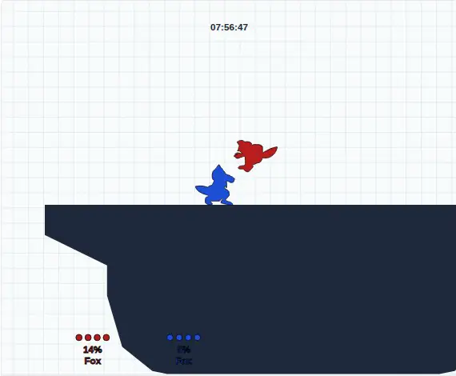
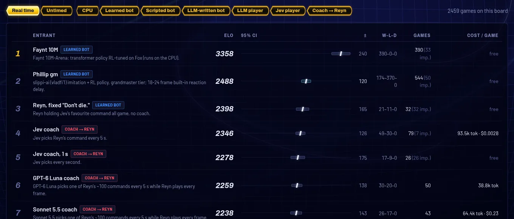
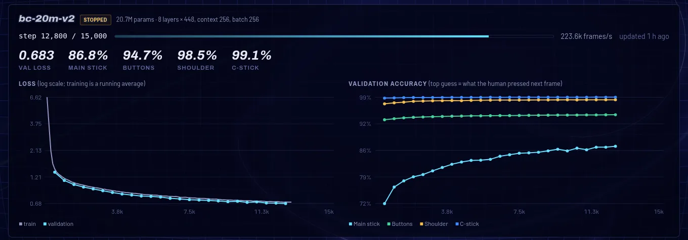

Melee × AI
Melee Bot Elo
Every kind of Melee bot on one scale
CPUs, learned bots, LLMs, our own bot, a simulator and an AI commentary booth, in two days
Mateo Amado · 2026-11-14 · melee.m19182.dev

Why Melee
A game that doesn't wait
60 fps
one frame is 16.7 ms, and every one counts
2001
and still played competitively
- Hard for any AI: frame-level reactions and reading the opponent, with no pause button
- Most AI game benchmarks are turn-based. Here the game never waits.
- Great open tooling: Slippi replays and netplay, libmelee to read the game and press buttons, a decompiled game
History
Ten years of Melee bots
2001
Built-in CPUs, levels 1–92015
SmashBot: hand-written, frame-perfect2017
Phillip: RL, beat pros at 2-frame reactions2024
Phillip at human speed: lost to Zain, beat Moky2025
HAL: cloned pro Fox for ~$5, beats CPU 9 95%The last six weeks
- Faynt: 240 of 244 vs Phillip, public weights
- HAL scaled up: ~2200 Elo, top 1% of humans
- Reyn: a bot that takes orders in plain English
- Jev: picks one of N options in 0.15 s
- stomped.dev: a ranked ladder for bots
- A simulator: the game ~100× faster than real time
Nobody had put these bots on one scale, or asked where an LLM fits among them.
The bench
One scale for everyone
Built-in CPUs
Levels 1–9. Level 9 is the anchor: 1500.Scripted bots
Three small ones: a rusher, a laser spammer, a shine spammer.Learned bots
Phillip, HAL, MIMIC, Faynt and Reyn: networks trained on human replays.LLMs, five ways
Playing (paused or live), Jev, coaching Reyn, and writing a bot in 30 minutes.- The real game, from my disc, in Slippi Dolphin on my home server; a dozen games side by side
- Fox vs Fox, Battlefield and Final Destination, one Elo fit with 95% intervals
- No hand-picked games: a scheduler picks whichever game shrinks the widest intervals. {{games_bench}} games overnight in {{hours}} h
{{games_rt}} real-time and {{games_ut}} untimed games on two boards
Results

The real-time board
- Learned bots are far ahead. Faynt never lost: {{rec rt faynt}}. Then Phillip gm ({{elo rt phillip:gm}}) and HAL ({{elo rt hal:MASTER}})
- CPU levels barely matter in a Fox mirror: level 1 ({{elo rt cpu:1}}) beats level 5 ({{elo rt cpu:5}}). The CPU Fox jumps off the stage by itself
- LLMs span the whole board, depending on their job
LLMs
Where the LLMs landed
Playing: speed beats smarts
{{elo ut llm_paused:gpt-6.1-sol}} → {{elo rt llm_live:gpt-6.1-sol}}
GPT-6.1 Sol beats CPU 9 when the game waits for it. Live, {{drop llm_live:gpt-6.1-sol}} of its replies arrive too late, and every LLM sits around a level 4 CPU.Coaching: two words win
“Don't die.”
LLMs coaching Reyn barely beat a random coach. Holding “Don't die.” all game, with no coach, rates {{elo rt reyn:stock_protection}}: above every LLM coach.Coding: a CPU 9 in 30 min
{{elo rt written:sonnet-5.5/run1}}
Sonnet 5.5 wrote a 135-line bot just above the level 9 CPU. Opus's 303-line one did worse. One run each, so it ranks nothing yet.Also built
A website to watch it all

- Bench: both boards, a page per entrant with record and sample decisions
- All matches: every game on the server, drawn live in 2D
- Launch: any matchup, queued from the browser
- Games: every replay, with the AI's decisions on a timeline
- Live: the real game streamed, with what each AI is thinking
Public at melee.m19182.dev, dressed like Melee's own menus
Also built
An AI commentary booth
- Two casters: Charlie on play-by-play (“loses his mind on big moments”) and Laura on colour (“dry wit, teases Charlie”)
- A fast LLM watches the game's events (combos, stocks, self-destructs) and writes a line every few seconds
- ElevenLabs voices them, only while someone is listening
Charlie: HAL MASTER's Fox is in the air and Faynt's Marth is waiting for him!
Laura: Waiting is the right word. Faynt doesn't chase, Charlie, he collects.
Laura: Waiting is the right word. Faynt doesn't chase, Charlie, he collects.
Also built
Our own bot: MeleeBot

23,000
ranked online Yoshi games to learn from
- A small transformer that copies human play, the way HAL did: 4 s of game in, the next controller input out
- 6M: 0 wins in 12 against CPU 9. 20M: 1 win, twice the stocks taken
- Next: self-play, where the published bots got strong
Also built
A simulator, ~100× faster
287 / 300
replays reproduced frame for frame (the other 13 were unfinished files)
~100×
faster than the emulator
- The community decompiled Melee back into C; melee-sim-light runs it with no emulator
- I hooked every player into it, learned bots included
- Save any moment, try thousands of inputs, keep the best: tool-assisted superplay, and training on far more games than humans play
- Catch: no built-in CPUs
Next
Play the bots
- On a laptop with a controller: Phillip at any tier, Faynt, Reyn, MeleeBot
- From home over Slippi direct connect
- The board has a slot waiting for humans
What's next
- Superplay and training in the simulator
- MeleeBot: self-play, then the stomped.dev ladder
- A small local model, fast enough to matter live
- A coach that starts from “Don't die.”
Write-up, boards, replays and live games
melee.m19182.dev/writeup